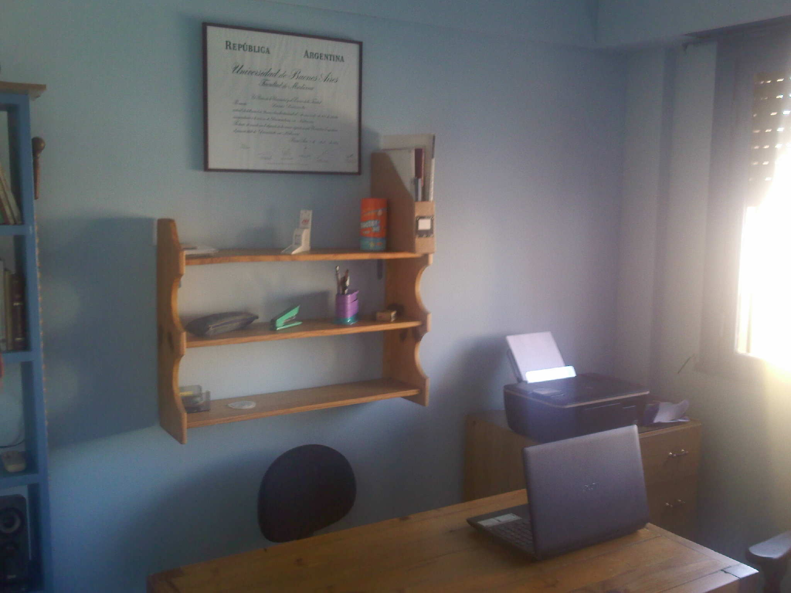
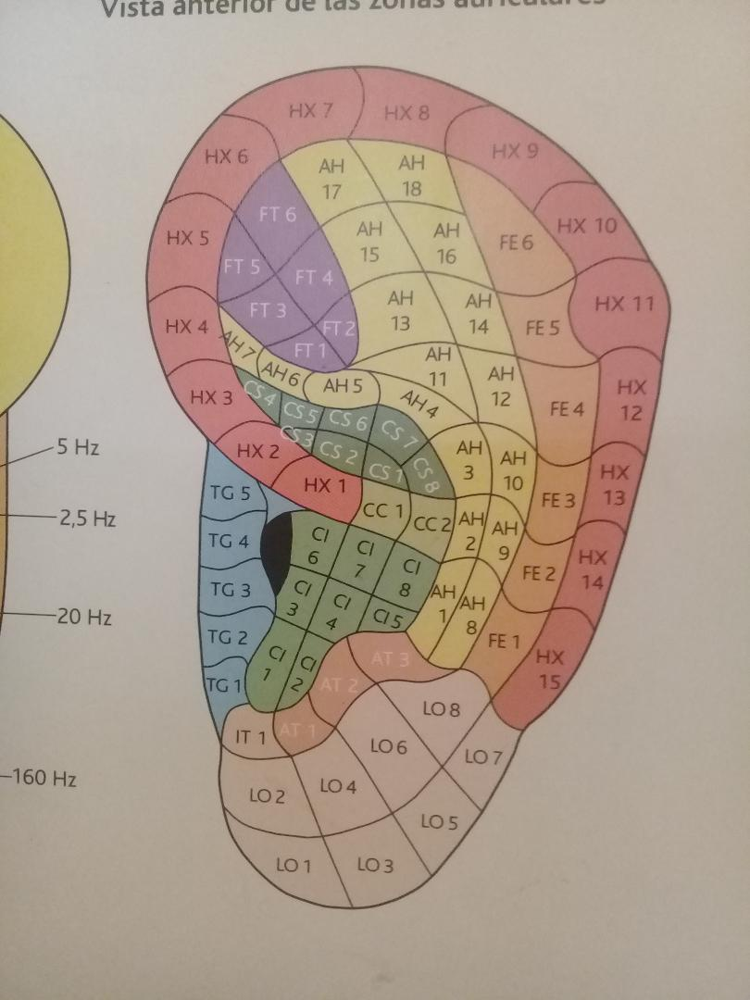
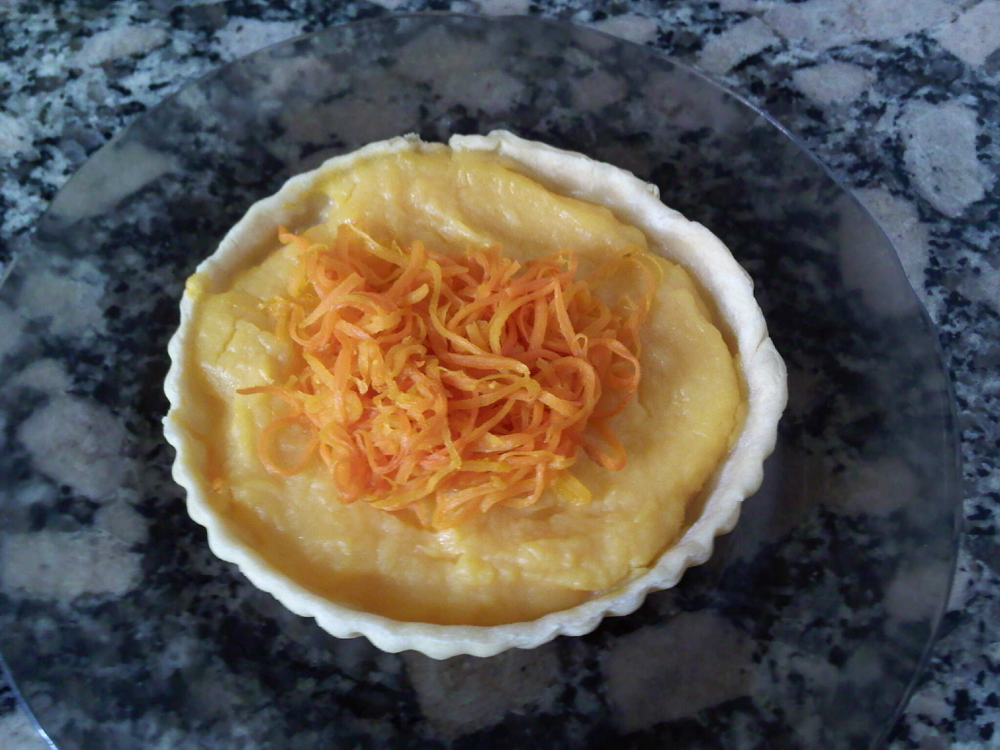
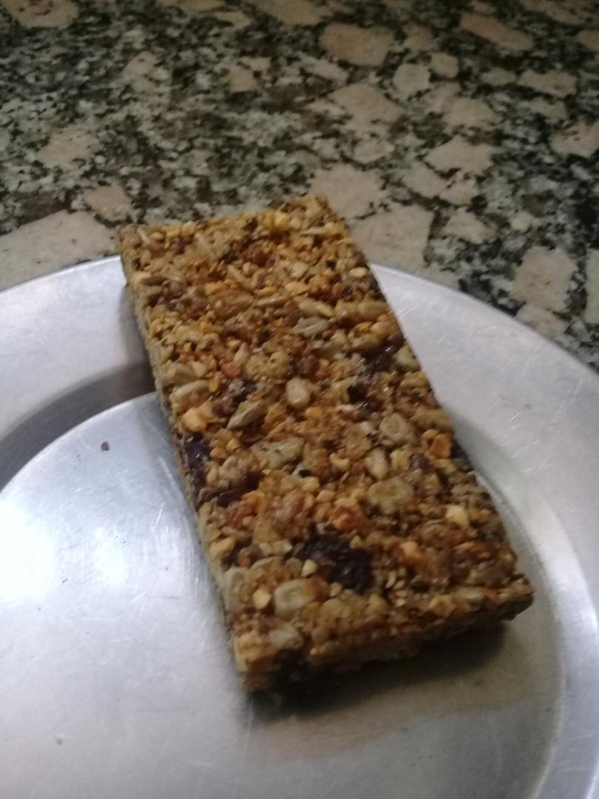
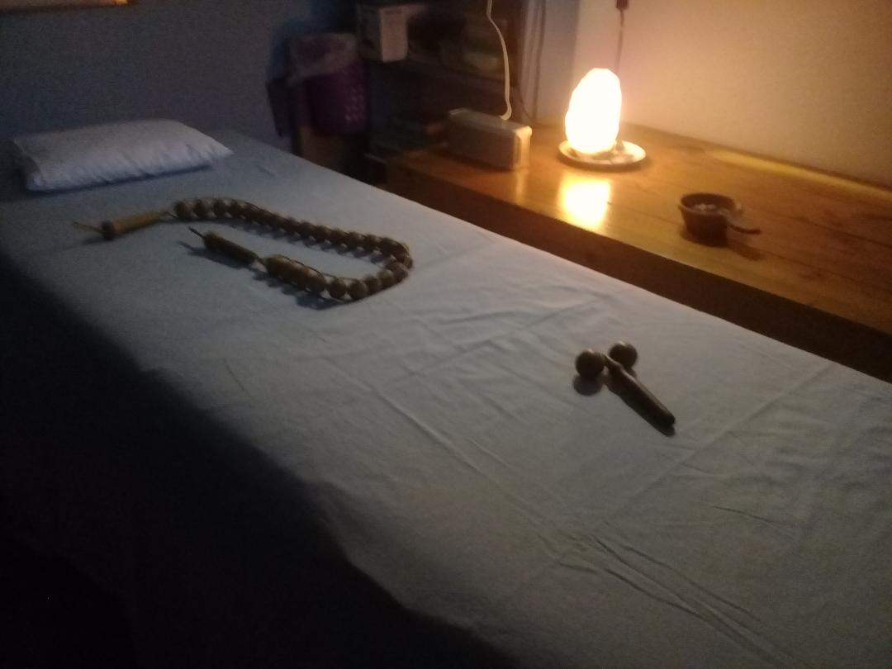

CONSULTORIO NUTRICIONAL
">
.Consultas nutricionales personalizadas.
.Tratamientos orientados a resolver diversas patologias o simplemente encontrar un mayor bienestar y nivel de vida.
.Planes para pacientes con diagnostico de sobrepeso, obesidad, bajo peso, diabeticos, hipertensos, insuficiencias renales, diverticulosis, trastornos gastricos, etc
.Nutricion infantil.
.Gerontologia.
AURICULOTERAPIA
">
.Aplicacion de la nombrada terapia alternativa para complementar la terapeutica nutricional, implementada puntalmente en cuadros de sobrepeso y obesidad, con el fin de lograr el objetivo propuesto.
.Utilizacion de aparatologia indicada para estimular puntos en relacion al cuadro en indicado.
.Estrictas normas de seguridad e higiene
.Se tratan de igualmente, cuadros de ansiedad, insomnio, tabaquismo y stress.
PRODUCTOS NUTRITIVOS
">">.Elaboracion de preparaciones nutritivas, balanceadas, con la intencion de poder realizar ingestas acertadas y que respondan a un plan de alimentación saludables.
.Las mismas son supervisadas en todos sus pasos, desde la compra de materias primas, pasando por la preparacion previa y final, y cerrando el ciclo con el envio y entrega al solicitante.
.La supervision se realiza bajo criterios higienicos y nutricionales de nivel academico.
.Entre los productos se encuentran tartas individuales y barras de cereal de facil transporte y consumo.
.Entregas a domicilio congeladas.
.Consulte gustos y precio a traves de CONTACTOS.
OTROS SERVICIOS
Nutrivia Terapia ofrece servicios que pueden acompañar el tratamiento, de esta forma se puede contactar al requiriente. con profesionales que puedan brindar el servicio elegido.
Dentro de los servicios que se ofrecen estarían:
- Entrenamiento personalizado ">
- Masoterapia y Reflexologia ">